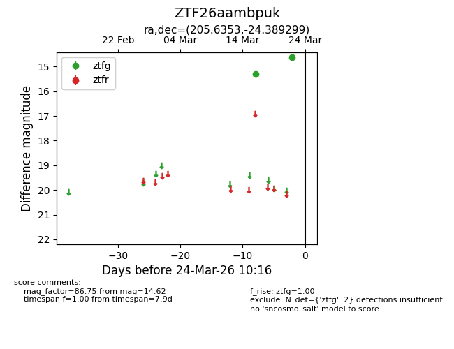
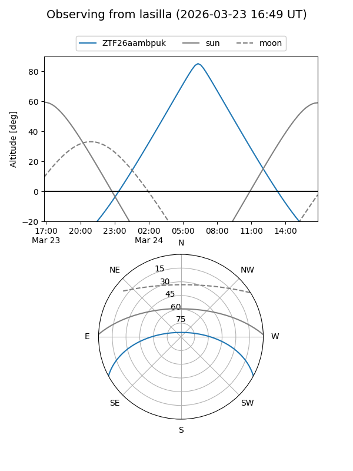
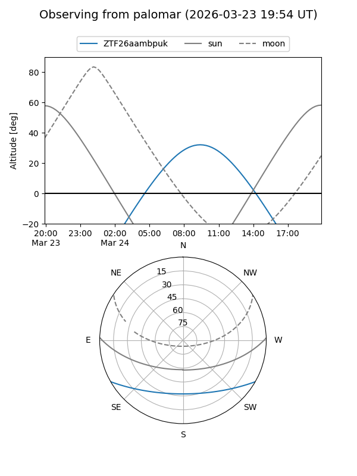

ZTF26aambpuk
Target ZTF26aambpuk at 2026-03-24 10:19
Aliases and brokers:
FINK: link
Lasair: link
ALeRCE: link
alt names
ZTF26aambpuk (ztf,fink_ztf)
Coordinates:
equatorial (ra, dec) = 205.6353,-24.38930
equatorial (HMS+DMS) = 13:42:32.46,-24:23:21.47
galactic (l, b) = (317.5442,+37.02817)
Flags:
Photometry:
last ztfg=14.62
2 ztfg detections
Lightcurve

Visibility


Additional plots